Some moments stay with us.
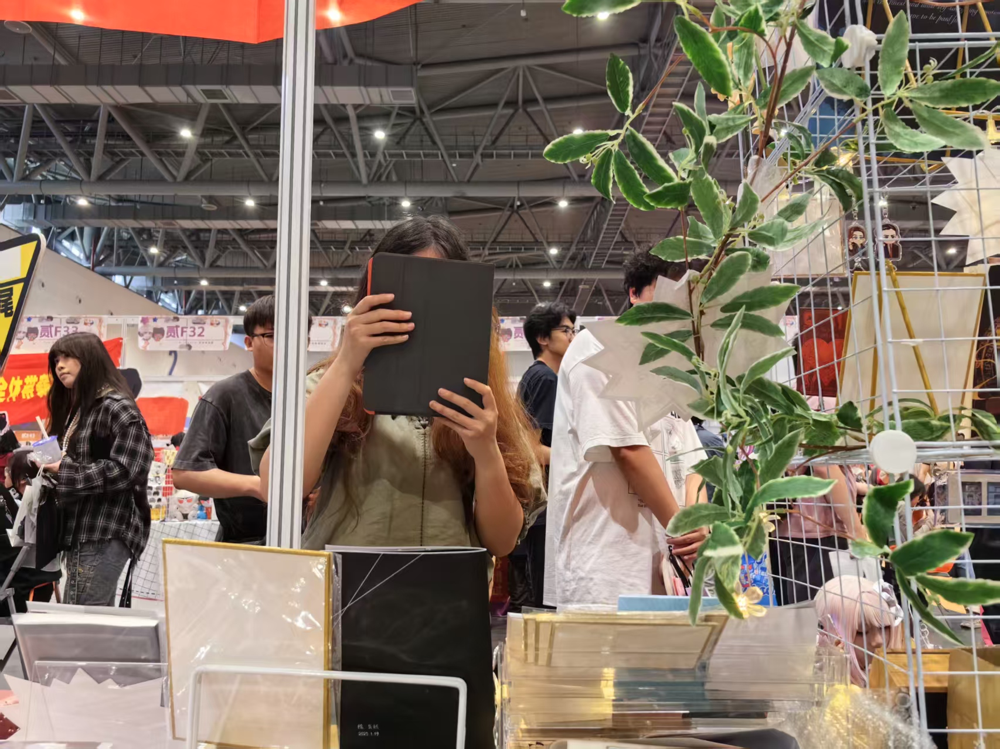
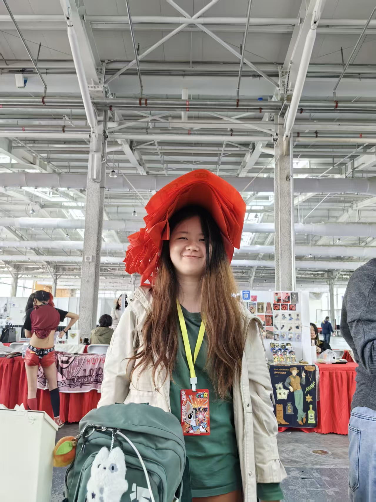
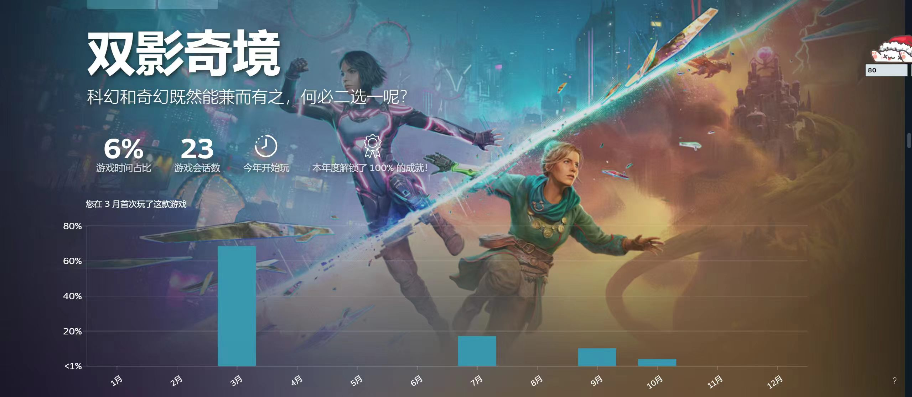
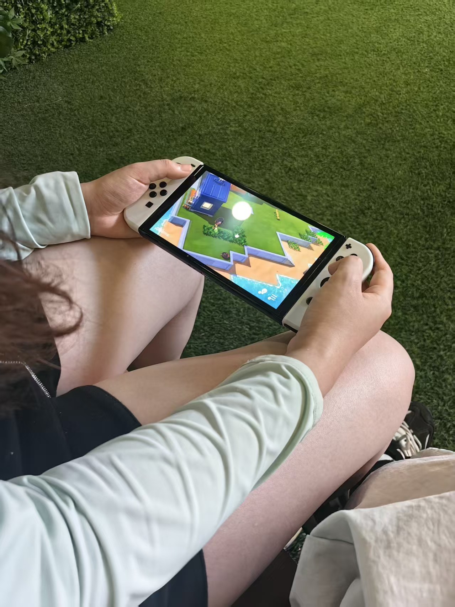
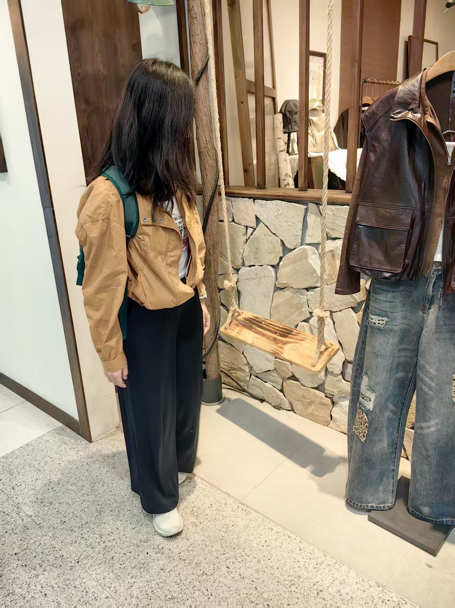
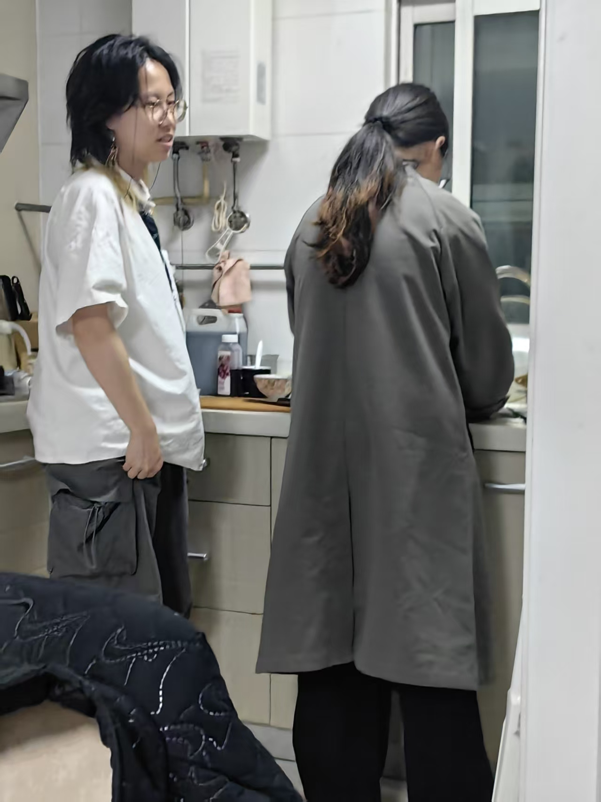
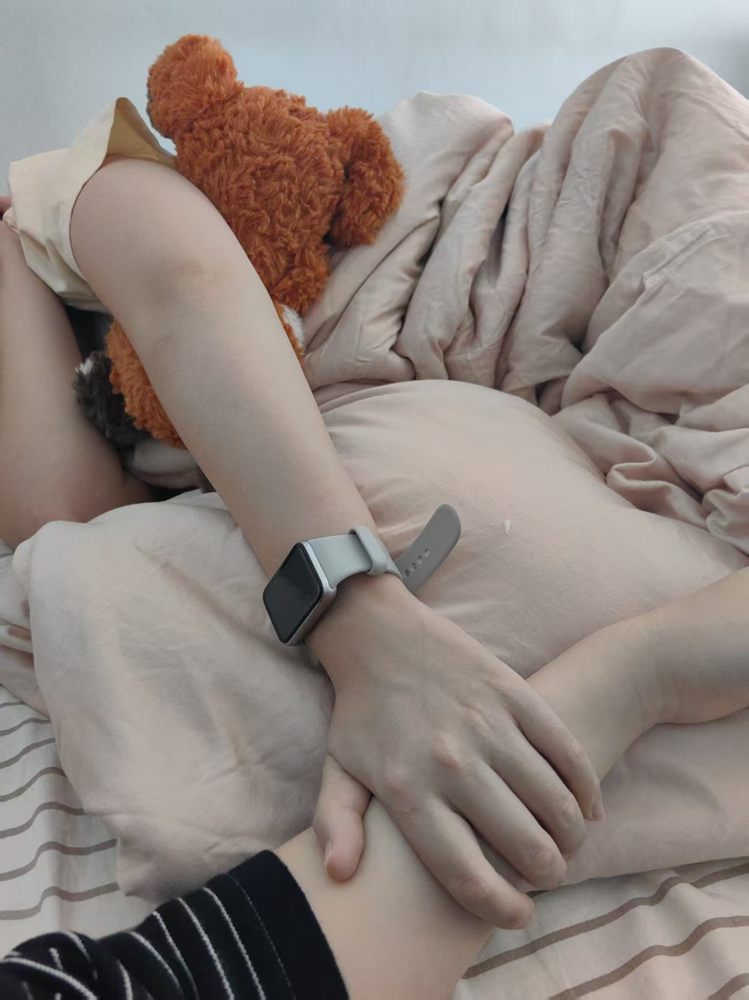
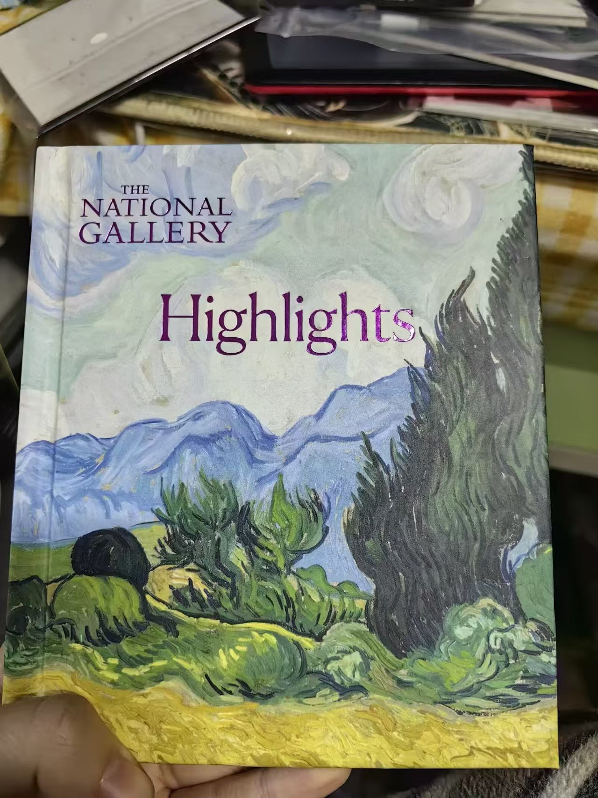
THE MEMORY ARCHIVE Little things. Precious days.
OUR STORY, STILL UNFOLDING.
为了纪念一些最珍贵的事情，我做了一个这样一个网站。可以放上和妻子一块的回忆。
这样就可以一直重复回看，但是因为太赶工了，好多地方还没有写完，等我以后再完善。
和你在一起的每一天都弥足珍贵，我希望你可以一直这样快乐，幸福。
——椰肉 2026.11.3
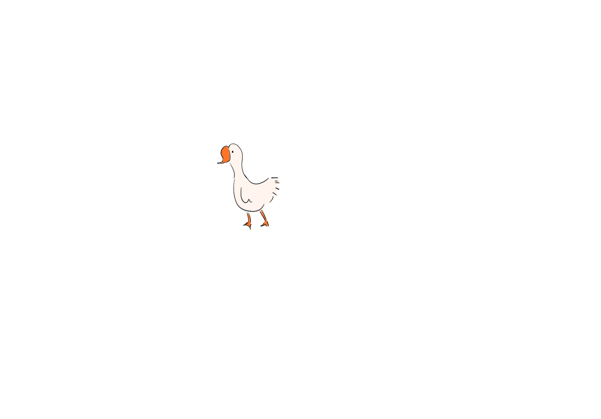
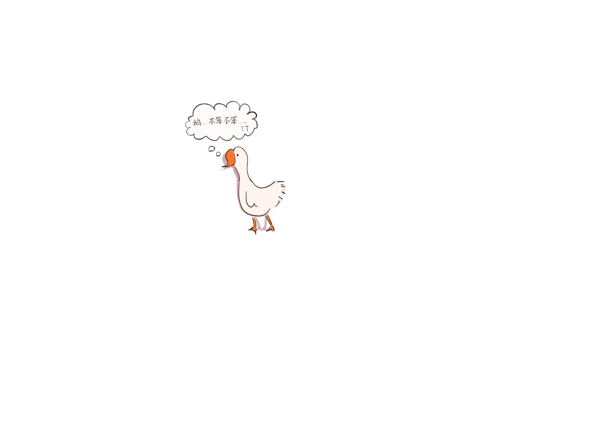
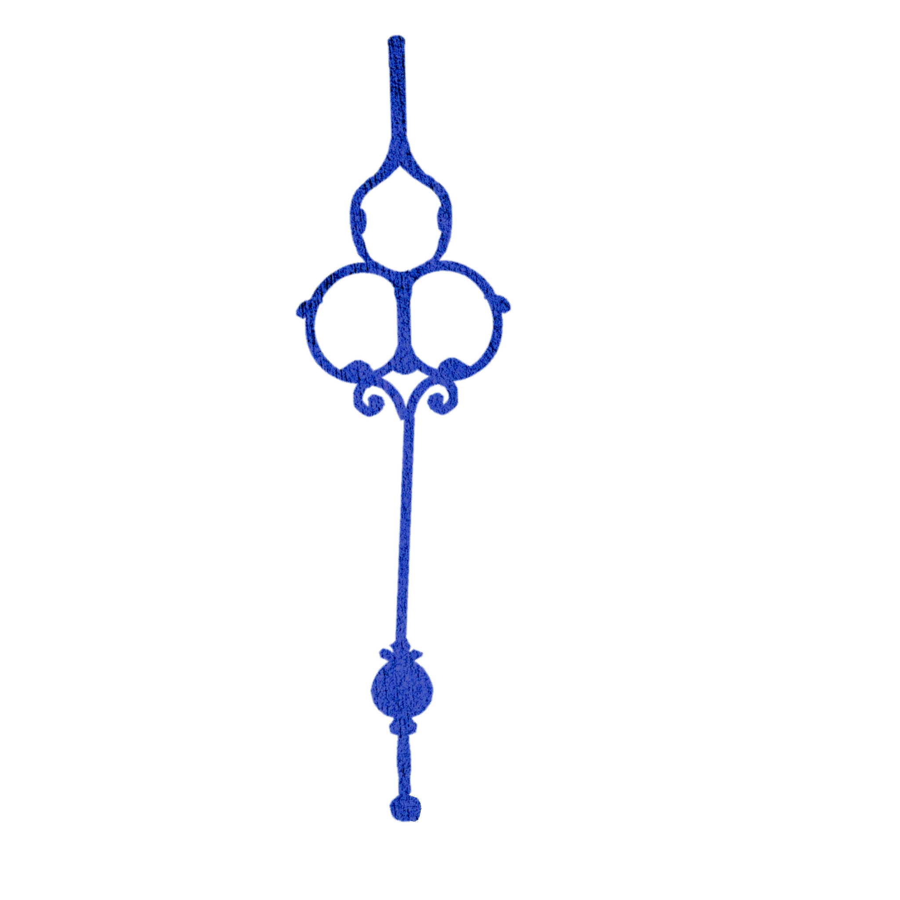